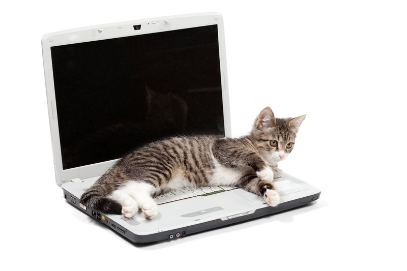

Workshops

Aprende gitbash para poder mejorar tu portafolio y mejorar en tus proyectos.
Control de versiones en la Universidad de Colima
inicioGit Bash es una aplicación para Microsoft Windows que proporciona un entorno de emulación de terminal similar al de sistemas operativos como Linux o macOS. Básicamente, te permite usar comandos de consola tipo Unix directamente en tu computadora con Windows.
Únete al grupo
Aprende gitbash para poder mejorar tu portafolio y mejorar en tus proyectos.
Aprende versionado de github y mejora tu portafolio.